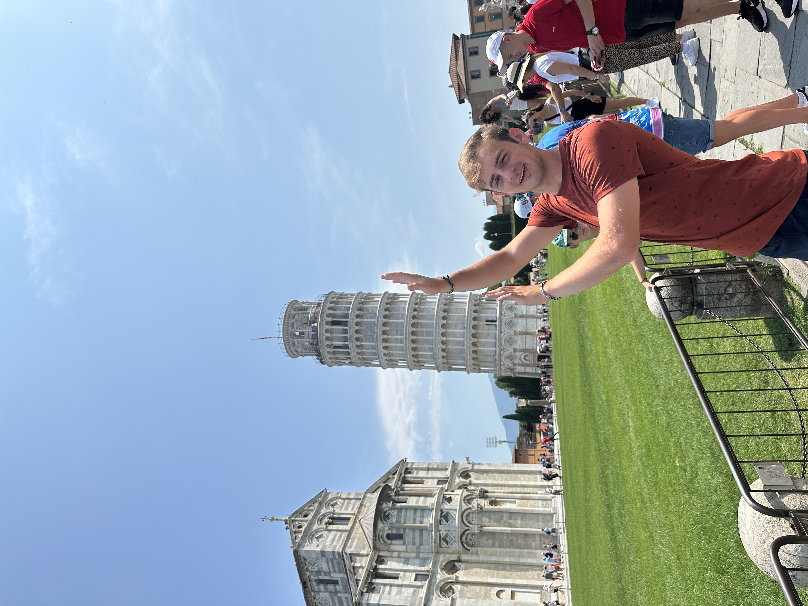

About
I am a sopohomore computer science student currently studying at Rose-Hulman Institute of Technology. I plan to pursure higher education relating to artificial intelligence. I believe my logic-oriented brain is my greatest asset I and have always been good at puzzles and brain-teasers because of it.
When I am truly passionate about anything, I become obsessed with it. Whether that be a personal project (see portfolio page), a sport, or even a good friend, I commit myself fully to whatever it is I care about. I am a fun, charismatic person and am able to turn any task into an enjoyable one.